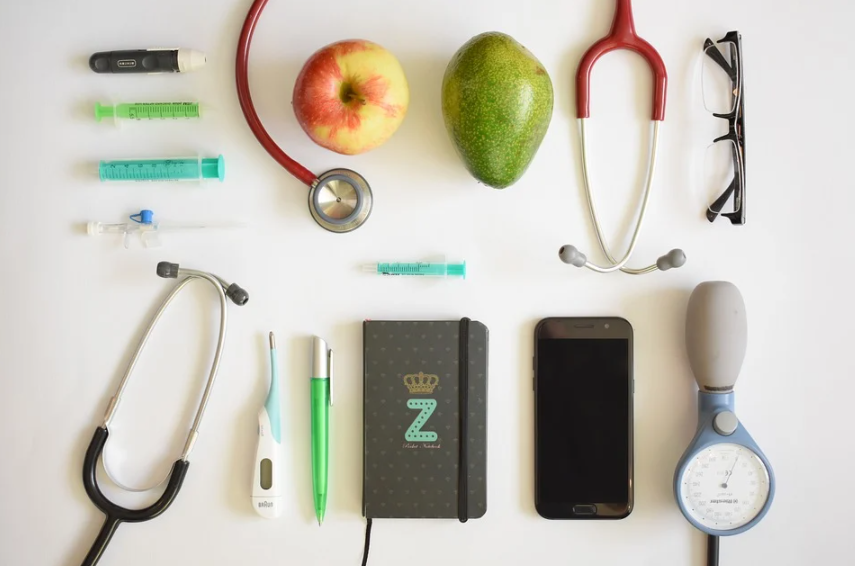

We're here to help!

Diabetes is a chronic disease that occurs either when the pancreas does not produce enough insulin (Type 1) or when the body cannot effectively use the insulin it produces (Type 2). Insulin is a hormone that regulates the transport of blood sugar, glucose, to cells as an energy or materials for metabolism. Hyperglycaemia, or raised blood sugar, is a common effect of uncontrolled diabetes and over time leads to serious damage to many of the body's essential systems, especially the nerves and blood vessels.
According to CDC, 34.2 million Americans or over 10% of the population have diabetes. The alarming number is that 88 million American adults have prediabetes. Another warning sign is that the diagnosed cases of type 1 and type 2 diabetes have significanlty increased among US youth. Combating diabetes is a national health goal, and it is also a personal responsibility.
This project is intended to provide a convenient tool for detection of diabetes using symptoms that people can monitor without using medical equipements. The ultimate goal is to allow people to assess the risk early, to seek medical treatment early, and to raise the awareness to a healthy lifestyle to prevent this disease.